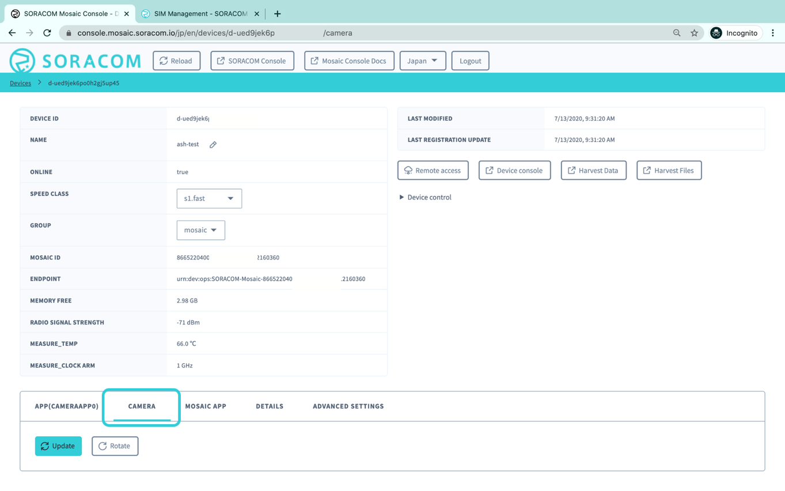
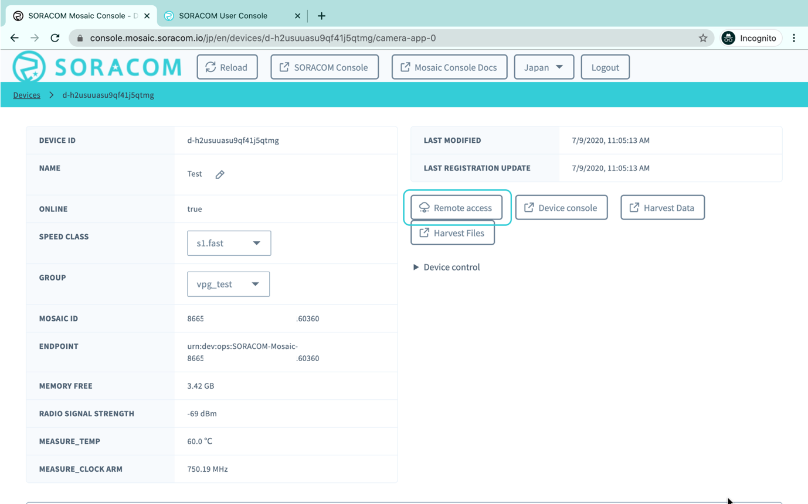
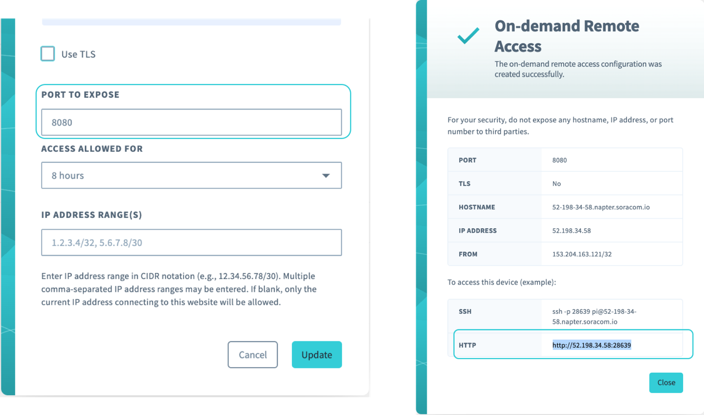
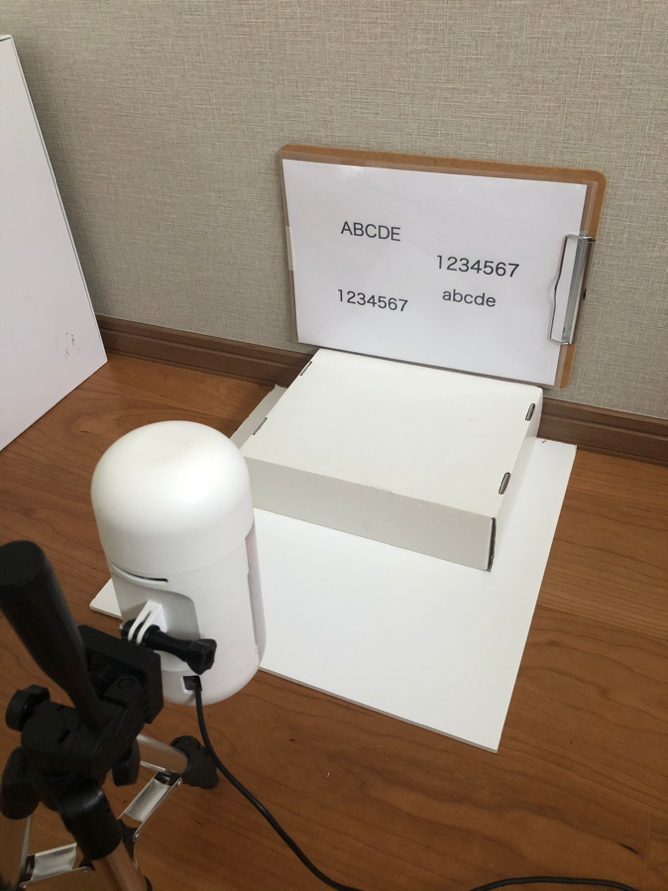
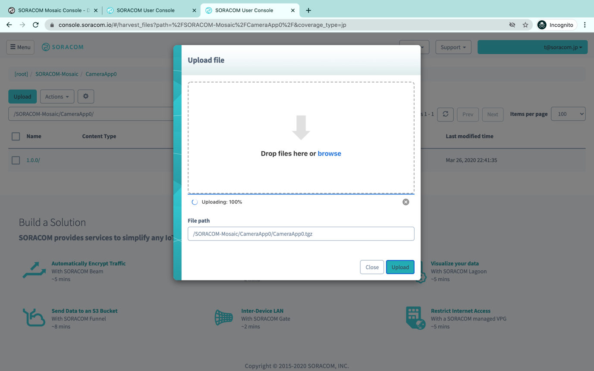
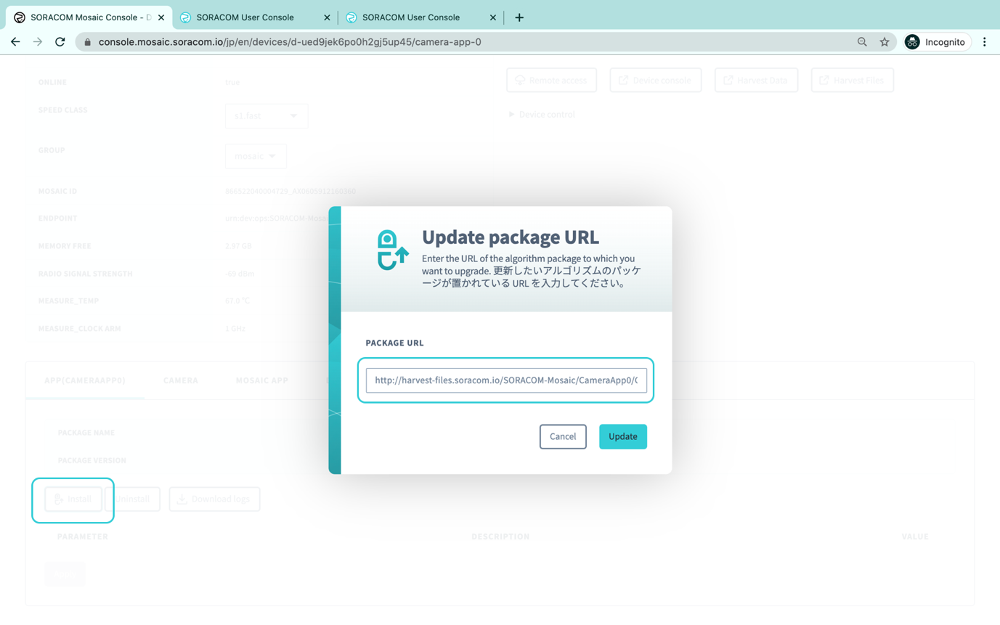
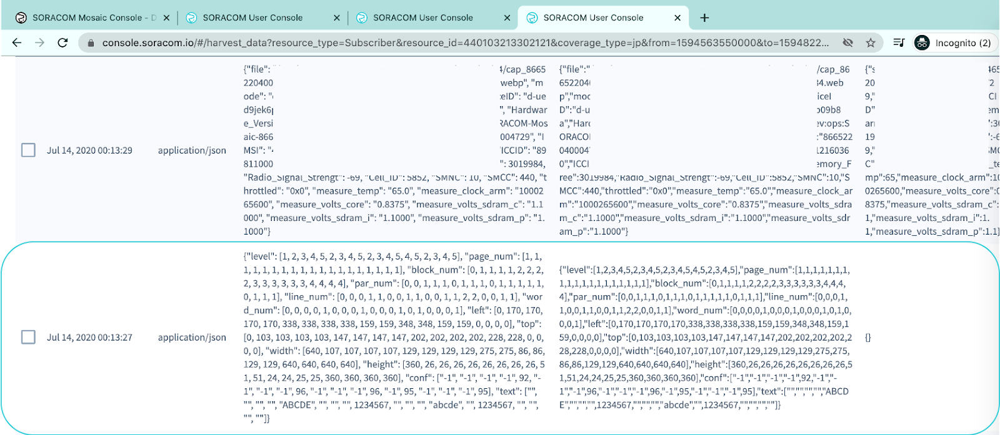

レシピ難易度：★★★☆☆
ネットワークにつながっていない機器のIoT化を諦めていませんか。このレシピではS+ Camera Basicを使って、カメラに映った数字や文字を読み取ってOCR(Optical Character Recognition)によって電子データ化します。

全体構成

本レシピを行うために必要な時間、概算費用
本レシピは以下の通りです。
- 必要な時間: 約1時間15分
- 概算費用: 約82,000円
※ 概算費用:
- S+ Camera Basic費用 79,800円
- 月額費用 2,200円
- SORACOM Air, SORACOM Inventory, SORACOM Mosaic、SORACOM Harvestの各種サービスの概ねの費用 (税や送料などの付帯費用や無料枠適用は考慮しないものとしています)を含む。
このコンテンツの進め方
ページの内容を読み、また作業を行ったら右下の［Next］を押して次のステップへ進みます。また、［Back］を使って戻ったり、左のナビゲーションメニューでもページの移動が可能です。
左上の［×］を押してコンテンツを終了することができます。また、ページを開きなおすことで再開できます。ページのアドレスはブラウザの［履歴］メニューを利用してください。
本レシピを行うためには以下のものをご用意ください。
ハードウェア
品名 | 数量 | 価格 | 購入先 | 備考 |
S+ Camera Basic | 1 | 79,800円 | ― | |
パソコン | 1 | ― | ― |
|
※ 金額はレシピ作成時となります。ソラコムで販売している金額は税抜き・送料別です。
その他必要なもの
必要なもの | 費用 | 作成方法など |
SORACOM アカウント | 無料※ |
※ アカウント作成・維持の費用の料金です。
S+ Camera Basic にはSIM(SORACOM Air Plan-D)が内蔵されています。そのため、最初にデバイスを利用する場合、ソラコムコンソールへログインして SIM の受け取り確認を行ってください。確認が完了するとSIM管理の一覧にSIMが表示されます。
次に、グループ作成画面よりS+ Camera Basicで利用するグループを作成します。作成したグループに対して以下のサービスを有効にします。

先ほど作成したグループをS+ Camera Basicに割り当てるとともに、Speed classをs1.fastに変更します[1]。

電源をいれて青いLEDが点滅すると、SORACOM Mosaic ConsoleにS+ Camera Basicが登録され、自動的にオンラインになります。


Device ID一覧から対象のデバイスをクリックすると、デバイスの詳細画面に移動します。現在カメラに写っている画像は、デバイス詳細画面のCAMERAメニューから確認することができます。

Updateボタンをクリックすると現在のカメラの画像[2]が表示されます。

S+ Camera Basicで実行するアルゴリズムの開発を行う場合には、PCにS+ Camera Basicの開発環境を構築します。アルゴリズムを実行するだけであればこのステップは飛ばして次に進んでください。
S+ Camera Basicと同じ環境を構築するためにpythonのruntime環境を準備します。runtime環境の構築にはpyenvとvenvを使用します。詳しい環境の構築方法に関しては開発者ドキュメントを参照してください。
開発環境の構築完了後、PCにS+ Camera Basicの画像を取り込んで、動作の確認を行います。最初にサンプルアルゴリズムをダウンロードします。ダウンロードしたファイルには次のファイルが含まれます。
- info.json: バージョン情報ファイル
- CameraApp0: 実行モジュール
- CameraApp.py: アルゴリズムの本体
- PreSetup: アルゴリズム実行前に実行するスクリプト
- CameraApp0_custom_oma.xml: アルゴリズムのパラメータ設定ファイル
S+ Camera Basicのカメラ画像へPCから直接アクセするためにRemote accessボタンをクリックしてSORACOM Napterを設定します。


PORT TO EXPOSE に8080を設定してUpdateをクリックするとS+ Camera BasicのにアクセするためのHTTPの情報が表示されます。こちらをコピーして、サンプルアルゴリズムを実行します。上記の例の場合、次のようなコマンドを実行します。
DEVICE_INTERFACE_RI=http://13.112.127.216:46098 python CameraApp.py
成功すると次のような実行ログが表示されます。
INFO:__main__:main
INFO:__main__:randomized delay 1 sec
INFO:__main__:randomized delay 123 sec
INFO:soracom_device_interface:getCapture start
INFO:soracom_device_interface:startCapture start
DEBUG:urllib3.connectionpool:Starting new HTTP connection (1): 13.112.127.216:46098
DEBUG:urllib3.connectionpool:http://13.112.127.216:46098 "GET /v1/stopCameraCapture HTTP/1.1" 200 0
INFO:soracom_device_interface:stopCameraCapture response = <Response [200]>
INFO:soracom_device_interface:cameraState cameraStateJson = {'width': 1280, 'height': 720, 'framerate': 10}
DEBUG:urllib3.connectionpool:Starting new HTTP connection (1): 13.112.127.216:46098
DEBUG:urllib3.connectionpool:http://13.112.127.216:46098 "PATCH /v1/cameraState HTTP/1.1" 200 0
INFO:soracom_device_interface:cameraState response = <Response [200]>
DEBUG:urllib3.connectionpool:Starting new HTTP connection (1): 13.112.127.216:46098
DEBUG:urllib3.connectionpool:http://13.112.127.216:46098 "GET /v1/startCameraCapture HTTP/1.1" 200 0
INFO:soracom_device_interface:startCameraCapture response = <Response [200]>
DEBUG:urllib3.connectionpool:Starting new HTTP connection (1): 13.112.127.216:46098
デフォルトでは120秒ごとに画像を取得するように設定されています。間隔を変更する場合にはCameraApp.pyの42行目のSORACOM_ENV_WAITの数値（秒）を適当な値へ変更して下さい。
CameraApp.py
# 0: upload an image every wait second.
# 100: upload an image if a face is detected.
# 101: upload an image with masking eyes.
FACE_MODE = int(os.getenv('SORACOM_ENV_MODE', '0'))
# image upload interval. too short interval increases upload data volume.
WAIT = int(os.getenv('SORACOM_ENV_WAIT', '120'))画像は/tmp/io.soracom.harvestfilesにwebp形式の画像ファイルとして保存されます。Webp形式の画像はGoogle Chrome等のブラウザを使って確認することができます。
余談にはなりますが、SORACOM_ENV_MODEを変更することで、アルゴリズムの動作を変更することができます。本レシピの執筆時点でサポートされているモードは次の通りです。
モード | 備考 |
0 | SORACOM_ENV_WAIT間隔で画像のアップロード |
100 | SORACOM_ENV_WAIT間隔で、目線を検出した際に画像をアップロード |
101 | SORACOM_ENV_WAIT間隔で、目線を検出した際に、目線にモザイクをかけて画像をアップロード |
OCRを行うためにはtesseractのインストールが必要になります。 tesseractをインストールした後にpythonのwrapperとなるpytesseractをインストールします。
pip install pytesseract
S+ Camera Basicの画像を利用してtesseractの動作確認を行います。まず、次のようにカメラの前にアルファベットまたは数字の書いたボードを用意します。

そしてPCに保存された画像に対して次のコマンドを実行します。
tesseract xxxx.local_yyyyy.webp result -l eng
OCRの結果がresult.txtに保存されるので確認してください。うまく認識しない場合には、次のことを試してみてください。
- カメラをボードに対して正体させる。
- 数字や文字が大きくなるようにカメラをボードに近づける
- --oemと--psmを設定する。各値についてはこちらを参照してください。
結果が確認できたら、アルゴリズムにOCR処理を追加します。最初にCameraApp.pyの21行目と22行目に次の２行を追加します。
CameraApp.py
import cv2
import pytesseract
from pytesseract import OutputCameraApp.pyの268行目以降にOCR処理を追加します。
CameraApp.py
crop_image = cv2.resize(crop_image, size)
logger.info('image resize end')
# OCR
ocr_result = []
configuration = ("-l eng –oem 3 --psm 3")
try:
ocr_result = pytesseract.image_to_data(
image,
lang='eng',
output_type=Output.DICT,
timeout=30.0,
config=configuration
)
logger.debug('ocr results: %s', ocr_result)
except Exception as e:
logger.error("can't ocr by %s", e)
raiseこの状態で再度実行すると次のようなログが新たに出力されと思います。
ocr result: {'level': [1, 2, 3, 4, 5, 4, 5, 4, 5, 2, 3, 4, 5, 2, 3, 4, 5], 'page_num': [1, 1, 1, 1, 1, 1, 1, 1, 1, 1, 1, 1, 1, 1, 1, 1, 1], 'block_num': [0, 1, 1, 1, 1, 1, 1, 1, 1, 2, 2, 2, 2, 3, 3, 3, 3], 'par_num': [0, 0, 1, 1, 1, 1, 1, 1, 1, 0, 1, 1, 1, 0, 1, 1, 1], 'line_num': [0, 0, 0, 1, 1, 2, 2, 3, 3, 0, 0, 1, 1, 0, 0, 1, 1], 'word_num': [0, 0, 0, 0, 1, 0, 1, 0, 1, 0, 0, 0, 1, 0, 0, 0, 1], 'left': [0, 204, 204, 204, 204, 382, 382, 388, 388, 193, 193, 193, 193, 0, 0, 0, 0], 'top': [0, 157, 157, 157, 157, 209, 209, 269, 269, 283, 283, 283, 283, 0, 0, 0, 0], 'width': [640, 315, 315, 117, 117, 137, 137, 93, 93, 132, 132, 132, 132, 640, 640, 640, 640], 'height': [360, 142, 142, 32, 32, 34, 34, 30, 30, 34, 34, 34, 34, 360, 360, 360, 360], 'conf': ['-1', '-1', '-1', '-1', 84, '-1', 96, '-1', 94, '-1', '-1', '-1', 96, '-1', '-1', '-1', 95], 'text': ['', '', '', '', 'ABCDE', '', '1234567', '', 'abcde', '', '', '', '1234567', '', '', '', '']}
認識された文字は、Textとして表示されます。この例では "ABCDE", "1234567", "abcde", "1234567"が認識されたことがわかります。
OCRの結果をSORACOM Harvest Dataへアップロードする処理を追加します。先ほどのOCRの処理を次のように書き換えます。
CameraApp.py
crop_image = cv2.resize(crop_image, size)
logger.info('image resize end')
# OCR
ocr_result = []
configuration = ("-l eng –oem 3 --psm 3")
try:
ocr_result = pytesseract.image_to_data(
image,
lang='eng',
output_type=Output.DICT,
timeout=30.0,
config=configuration
)
except Exception as e:
logger.error("can't ocr by %s", e)
raise
texts = ocr_result.get('text', None)
new_texts = []
for txt in texts:
if txt.isdigit():
txt = int(txt)
new_texts.append(txt)
ocr_result['text'] = new_texts
encode_json_data = json.dumps(ocr_result)
response = HARVEST_DATA.uploadData(encode_json_data)最終的なCameraApp.pyのInterval_mode_000は次のようになります。
CameraApp.py
def Interval_mode_000(deviceInterface):
"upload an image periodically"
wait_for_next = False
try:
image = deviceInterface.getCapture()
if image is None:
return wait_for_next
# crop image
logger.info('crop_im start')
crop_image = IMAGE_UTIL.crop_im(
image, int(CROP_TOP), int(CROP_BOTTOM),
int(CROP_LEFT), int(CROP_RIGHT))
logger.info('crop_im end')
# resize image
logger.info('image resize start')
size = (int(UPLOAD_SIZE_W), int(UPLOAD_SIZE_H))
crop_image = cv2.resize(crop_image, size)
logger.info('image resize end')
# OCR
ocr_result = []
configuration = ("-l eng --oem 3 --psm 3")
try:
ocr_result = pytesseract.image_to_data(
image,
lang='eng',
output_type=Output.DICT,
timeout=30.0,
config=configuration
)
except Exception as e:
logger.error("can't ocr by %s", e)
raise
texts = ocr_result.get('text', None)
new_texts = []
for txt in texts:
if txt.isdigit():
txt = int(txt)
new_texts.append(txt)
ocr_result['text'] = new_texts
encode_json_data = json.dumps(ocr_result)
response = HARVEST_DATA.uploadData(encode_json_data)
deviceState = deviceInterface.getDeviceState()
upload('cap', deviceState, crop_image)
wait_for_next = True
except Exception as e:
logger.error(e)
return wait_for_next編集したアルゴリズムをS+ Camera Basicへデプロイします。最初に不必要なファイル（__pycache__, *.pyc等）を削除し、ディレクトリ全体のアーカイブを作成します。この際にアーカイブのDirectory名は必ずCameraApp0から変更しないでください。
tar cfv CameraApp0.tgz CameraApp0
作成した アーカイブをSORACOM Harvest Files（/SORACOM-Mosaic/CameraApp0/）にアップロードします。

アーカイブの作成が終わったらSORACOM MosaicのAPP(CAMERAAPP0)タブからアルゴリズムのインストールを行います。先ほどは SORACOM Harvest Filesの/SORACOM-Mosaic/CameraApp0/CameraApp0.tgz へアップトードを行ったので、指定するパスはhttp://harvest-files.soracom.io/SORACOM-Mosaic/CameraApp0/CameraApp0.tgzになります。Updateを押すとカメラへのアルゴリズムのデプロイメントが開始されます。

インストールが成功するとAPP(CAMERAAPP0)のタブのPACKAGE NAMEおよびPACKAGE VERSIONが表示されるとともに、アルゴリズム実行次の環境変数を設定する画面が表示されます。インストールに失敗する場合は、アーカイブ作成元のディレクトリ名がCameraApp0になっているか、SORACOM Harvest Filesのパスがhttp://harvest-files.soracom.io/から始まるものになっているかを確認してください。それでもうまくいかない場合にはこちらを参照してください。
インストール後、しばらくしてからHarvest DataタブをクリックするとカメラからOCRの結果がSORACOM Harvest Dataへアップロードされていることが確認できると思います。

本レシピでは費用がかかるサービスを利用しています。本項をよく読み、必要な操作や解除作業を行うようにして、想定外の費用が掛からないようにしてください。
費用について
ここで記載している金額は全て税別、送料別となります。
SORACOM プラットフォームの利用料金
サービス／機能 | 料金 |
(今回の利用であれば 100MB 以内で収まる範囲) | |
1 リクエストあたり 0.004 円 | |
SORACOM Harvest FIles は一般的なファイル管理サービスとは異なり「データ転送量」に応じた課金体系です。保管されているファイル(サイズ)には費用は発生しません。例えば先月に1GBのファイルのアップロードを行った場合、1GBの転送に関して課金されます。翌月の転送が0バイトだった場合、先月の1GB分は保管されていますが、このファイルには費用は発生しません。 | |
300 円 (SIM 1枚あたり、月額、税別) | |
最初の登録: 1 USD/台・回 50 円/台・月 | |
月額費用 1,700円。利用月は無料。 |
※ 費用詳細はリンク先をご確認ください。
SORACOM Harvest Dataにアップロードしたデータ、SORACOM Harvest Filesにアップロードしたファイル、SORACOM Inventoryのデバイス、SORACOM Mosaicなど必要ない場合には削除/解約処理をお願いします。
本レシピでは、OCRによって、通信機能を持たない機器の数値や文字を電子化してSORACOM Harvest Dataに送信しました。OCRの結果とカメラの映像を同時に出したいときや、ある数値が検出された際にアラートを出したいような場合にはSORACOM Lagoonをご利用いただけます。
よくあるご質問はこちらでご案内しています。
[1] 画像の送信に時間がかかると場合エラーになる場合があるので、s1.fastを設定してください。
[2] S+ Camera Basicでは暗い場所でも映像を取得するため、Non-IRカメラを採用しているため日中は赤味がかった画像になります。